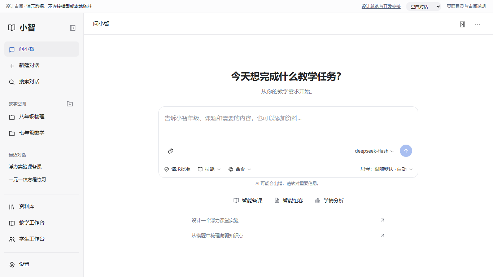
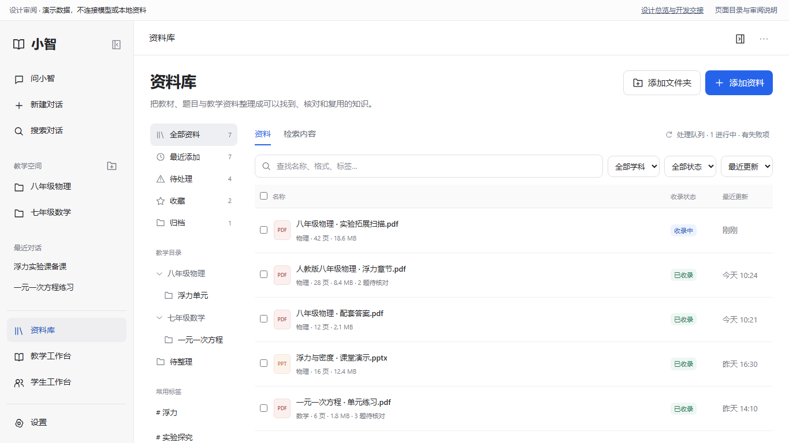
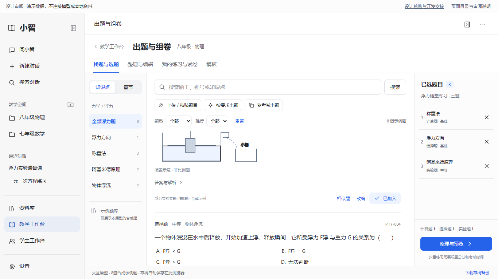
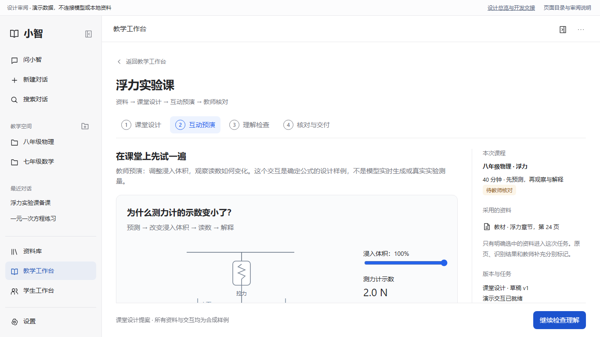
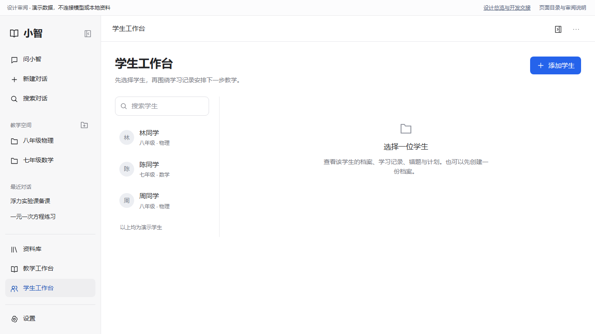
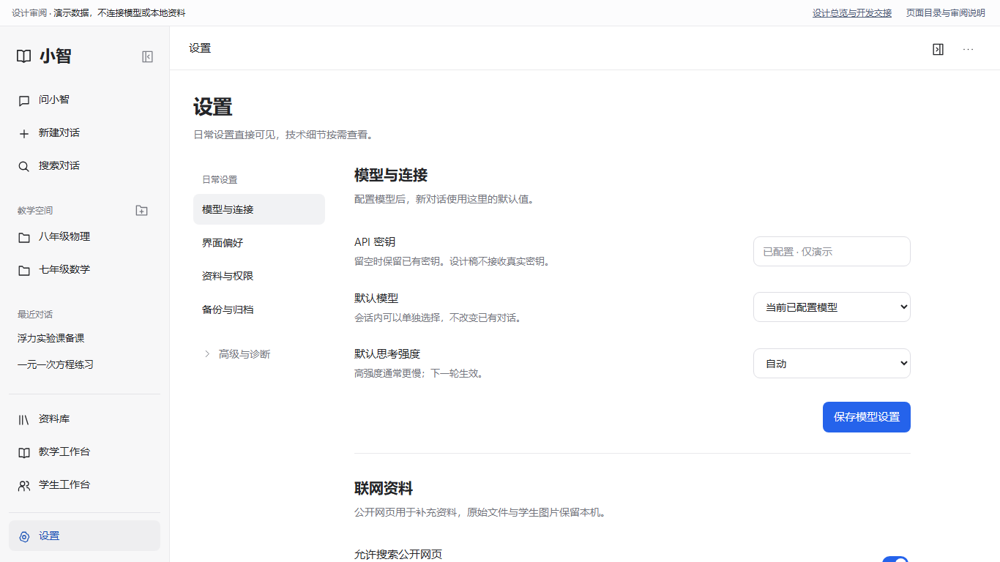

把教学任务做完，而不只是生成一段回答
从提出需求，到可核对的教学成果。
对话是入口，资料是依据，教师掌握最终决定。让界面更安静，让真实过程、来源与下一步更清楚。
这是离线设计与开发交接稿。全部内容为合成数据；不调用模型、不读真实文件、不写学生记录。输入框、底部工具栏及弹层在正式软件中复用现有组件，本稿不能作为修改它们外观或配置的依据。
六条可实际操作的审阅路径

01 · 问小智
正常展开公开工作说明，显示真实工具；交接正文时整段收起，用时在上。
首页 → 发送 → 过程 → 正文 → 成果预览
02 · 资料库
目录与标签组织资料，区分查文件与检索内容。先看概要，再看原页和校正。
筛选 → 原页 → 识别对照 → 题目 → 处理队列
03 · 出题与组卷 V3
完整题目选题与持久题篮；上传、需求命题、参考卷可以混用。
找题 ⇄ 编辑 ⇄ 预览；结构/版式分别复用
04 · 课堂设计与预演 新增提案
吸收教育智能体的活动、大纲和检查理解优势，保留教师预演与交付控制。
课堂安排 → 互动实验 → 理解检查 → 教师核对
05 · 学生工作台
先选学生，再看记录、错题、计划和复盘。结论绑定真实证据。
搜索学生 → 选择 → 页内六个视图 → 编辑保护
06 · 设置与恢复
日常配置就近保存；技术诊断按需进入，实际权限提醒依然明确可见。
模型 → 权限 → 备份 → 恢复影响确认相对之前，究竟改变什么
| 问题 | 此前体验 / 风险 | 最终设计决定 | 正式开发验收 |
|---|---|---|---|
| 过程与正文 | 状态占位被当成思考，折叠时机不稳定，正文与过程混合。 | 按真实事件分类，最终正文显式交接，失败不冒充完成。 | 同一 runId 的事件、界面、冷启恢复逐一对齐。 |
| 资料库 | 长识别结果挤占页面，服务就绪与资料可用混淆。 | 文件列表＋详情；原件、派生识别、教师修改分开；任务失败可恢复。 | 原页可回到、错误可重试、归档不删原件。 |
| 智能组卷 | 条件、来源与答案核对容易脱节，“已生成”被当成可交付。 | 蓝图→核对→交付；明确纯原题/混合/原创，版本变化使确认失效。 | 不暗自补题、放宽条件或复用失效确认。 |
| 课堂成果 | 生成了文档，未必能直接开展课堂活动。 | 先课堂安排、再预演和理解检查；新增能力独立排期。 | 教师实际操作可用后确认，不自动写学生档案。 |
| 设计一致性 | 全局 CSS、重复入口与大卡片削弱层级。 | 白灰基线、四主入口、页内导航、组件内部设计受保护。 | CSSOM 对照、键盘焦点、双尺寸和长内容截图。 |
过程的交接规则
1 · 请求已接受
立即反馈；没有事件时不虚构工具或推理。
2 · 公开工作过程
说明与真实工具自然展开，不铺私有推理。
3 · 最终正文开始
整段过程收起，冻结上方用时，正文继续流式。
4 · 核对与使用
来源、文件与审批按需进入；手动可重看过程。
参考项目的实际证据
DeepTutor · 真模型已完成
合成 PDF → 读取资料 → 工具执行 → 最终回答；刷新后过程收起。资料索引失败也被保留，未把引擎就绪说成资料可检索。
OpenMAIC 已真实生成大纲，服务端完成两页讲解和一道检查题；新浏览器回原任务地址为404，课堂重开与互动尚未验收。

交给下一位开发 AI
先复用、再重组；一个阶段一个验收。先完成样式边界、对话、资料库与组卷，再安排新增课堂预演。不能把原型中模拟的导入、组卷和导出当成业务完成。